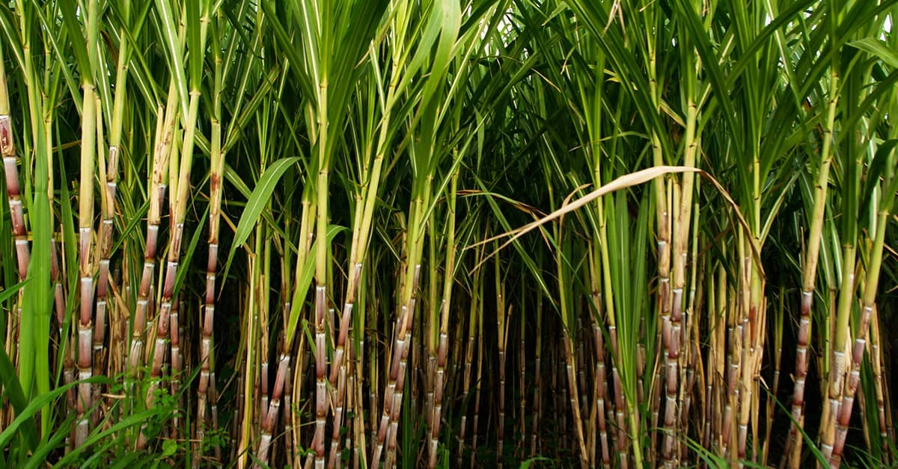

cana de açúcar
A produção de cana-de-açúcar acontece de forma regionalizada: de setembro a março, nas regiões norte e nordeste, e de abril a novembro, na região centro-sul. Dessa forma, os processos de plantio e colheita são praticamente contínuos no Brasil. São Paulo representa cerca de 50% de toda a produção de açúcar e etanol do País. Em segundo lugar está Minas Gerais, com 11,3% do total produzido, seguido por Goiás, com 11,1%. O estado paulista tem área plantada de 5,6 milhões de hectares, de acordo com dados de 2016 do Instituto Brasileiro de Geografia e Estatística (IBGE).
As usinas de cana-de-açúcar têm grande concentração na chamada Zona da Mata, no nordeste, abrangendo em maior quantidade os estados do Rio Grande do Norte, da Paraíba, de Pernambuco e Alagoas; na região sudeste, o destaque é para São Paulo. Geralmente, as áreas de cultivo ficam próximas às usinas, em um raio de 25 quilômetros, facilitando questões de custos e transporte.
A cana-de-açúcar também é o principal produto de exportação em países do Caribe como a Jamaica, Barbados etc. Com a suspensão de preferências europeias à cana caribenha em 2008, espera-se um colapso semelhante na indústria canavieira caribenha. Vários países da África austral, principalmente a África do Sul, Moçambique e a ilha Maurício, são igualmente importantes produtores de açúcar.
A plantação de cana-de-açúcar no Brasil é crucial para a produção de açúcar e etanol, com o país sendo um dos maiores produtores e exportadores globais. A cana-de-açúcar é cultivada principalmente em estados como São Paulo, Minas Gerais, Goiás e Pernambuco, onde as condições climáticas e o solo são favoráveis. A semeadura ocorre geralmente entre março e junho, e a colheita acontece de abril a novembro. O cultivo exige manejo cuidadoso, incluindo práticas de controle de pragas e doenças, irrigação e adubação adequadas. A cana-de-açúcar é uma cultura perene, com uma vida útil média de 5 a 7 anos, após o qual é necessário replantar. Além de ser uma fonte de açúcar para a indústria alimentícia, a cana é fundamental para a produção de etanol, um biocombustível renovável. A indústria sucroalcooleira brasileira investe em tecnologias para aumentar a eficiência e a sustentabilidade, reduzindo o impacto ambiental. A expansão do cultivo de cana deve equilibrar a demanda por produtos e a preservação ambiental, especialmente em áreas de alto valor ecológico.
